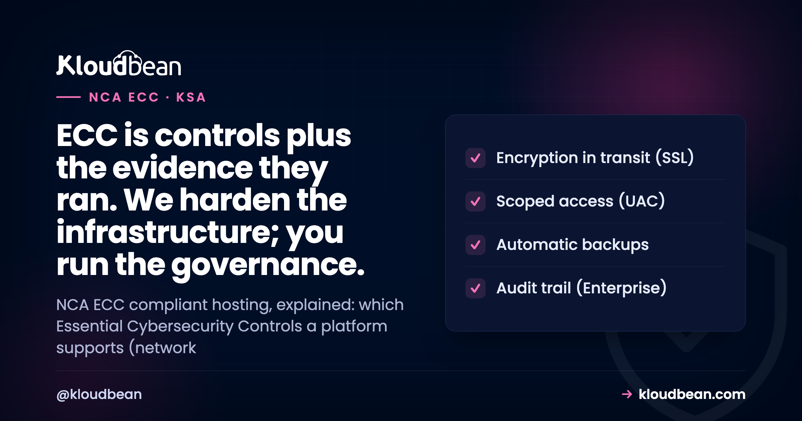
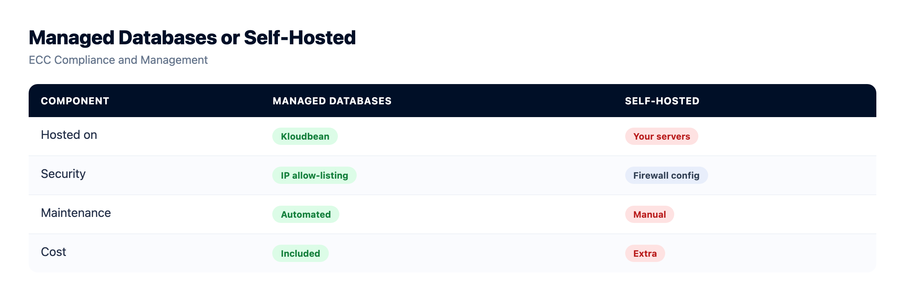
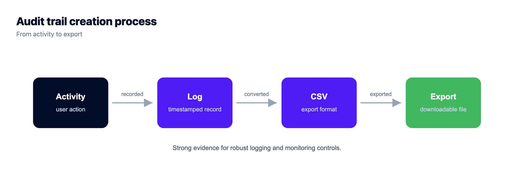

NCA ECC Compliant Hosting: What the Platform Covers, What You Own

If you're bidding on a Saudi government contract, or selling into a bank, a hospital group, or any operator of critical national infrastructure, someone in procurement will eventually ask about NCA ECC. And some vendor will promise that their NCA ECC compliant hosting ticks the box for you. It doesn't work like that. The Essential Cybersecurity Controls are a security framework, not a hosting feature you switch on. A platform can genuinely cover a slice of the controls, the infrastructure-shaped ones. The governance, the policies, the people, that half stays yours. This guide draws the line so you know exactly which parts a host helps with and which parts land on your desk.
Yes, hosting covers the infrastructure-shaped controls: network security, system hardening and patching, cryptography in transit, backups, and logging. Your part is the larger half: cybersecurity governance, risk management, policies, staff training, and incident response. No host makes you ECC compliant on its own. Treat the platform as a strong, defensible control baseline that your own program is built on top of.
What is NCA ECC? Saudi Arabia's Essential Cybersecurity Controls
NCA ECC stands for the Essential Cybersecurity Controls, issued by the National Cybersecurity Authority, Saudi Arabia's cybersecurity regulator. Think of the ECC as the Kingdom's baseline of Saudi cybersecurity controls: a structured list of what an organization must have in place to be considered reasonably secure. It was first published in 2018 (you'll see it referenced as ECC-1:2018) and has been revised since, so confirm the current version and its exact control counts with the NCA rather than trusting a blog for the numbers.
The framework is built around a handful of main domains. Cybersecurity Governance. Cybersecurity Defence. Cybersecurity Resilience. Third-Party and Cloud Computing Cybersecurity. Plus a set aimed at Industrial Control Systems for the sectors that run them. Those domains break down into dozens of subdomains and more than a hundred individual controls. That structure matters for hosting, because the controls are not all the same kind of thing. Some are technical settings on a server. Many are decisions, documents, and habits that live inside your organization.
Who has to care? ECC applies to government bodies and their affiliated entities, and to operators of critical national infrastructure in sectors like finance, energy, health, and telecoms. But its reach is wider than that in practice. Plenty of private companies adopt it because a government or a large enterprise client requires ECC alignment in the contract before they'll sign. So even if the law doesn't name you directly, a customer might.
One idea to hold onto from the start: the ECC is about controls plus evidence. It isn't enough to have a firewall. You have to show an assessor that the control exists, works, and is actually followed. That evidence requirement is exactly why hosting alone can never be the whole answer.
NCA ECC vs PDPL: security controls, not privacy
In Saudi procurement, two acronyms travel together and get muddled constantly: NCA ECC and PDPL. They're not the same thing, and mixing them up will trip you up in a compliance conversation.
NCA ECC is about cybersecurity. It sets a baseline of security controls, the technical and organizational measures that keep systems safe, overseen by the National Cybersecurity Authority. PDPL is the Personal Data Protection Law, Saudi Arabia's privacy law, overseen by SDAIA, the Saudi Data and AI Authority. One protects systems. The other protects people's personal data. You can be strong on ECC security controls and still mishandle privacy, and the reverse is true too.
They do overlap. Good access control and encryption help satisfy both. But they're assessed separately and they ask different questions, so treat them as two programs that share some plumbing. The privacy side, consent, lawful basis, retention, data-subject rights, is covered in detail in the companion piece on PDPL compliance hosting. This article stays on the security side: the ECC.
Does "NCA ECC compliant hosting" actually exist?
Yes and no, and the honest answer is worth more than a marketing one here. "NCA ECC compliant hosting" is fine as shorthand for hosting that supports your ECC program: a hardened server, IP allow-listing, encryption, backups, logs you can hand to an assessor. That's a real and useful thing to buy. What doesn't exist is a host that flips your whole organization into ECC alignment the moment you sign up. No server setting writes your cybersecurity policy or runs your risk assessment.
Look back at those domains. Cybersecurity Governance is entirely about your organization: strategy, roles, policies, oversight. Risk management is your assessments and decisions. Awareness and training is your staff. A host has nothing to install for any of those. The controls a platform can genuinely help with sit mostly inside one domain, Cybersecurity Defence, and even there you still own the configuration choices. So ECC hosting covers a slice, an important slice, but a slice.
Which ECC control domains map to infrastructure
The table below is the whole article in one grid. Read the middle column as what a managed platform delivers, and the right column as the work only your organization can do. No plan upgrade moves an item from right to left.
| ECC control area | Platform provides (infra controls) | You own (governance + process) |
|---|---|---|
| Cybersecurity governance | Nothing here; it's an organizational function | Strategy, roles, program ownership, management sign-off |
| Risk management | A documented, hardened baseline to assess against | Your risk assessments, treatment plans, and acceptance decisions |
| Identity and access | Subusers, UAC, 2FA, HttpOnly sessions | Who you grant access, least-privilege reviews, offboarding |
| Network security | IP allow-listing, Shorewall firewall, Fail2ban (private networking/VPC on Enterprise) | App-level rules, IP allowlists, deciding what you expose |
| Hardening + patching | OS, stack, and managed-layer patching handled | Your app dependencies and their CVEs, framework versions |
| Cryptography | Free, auto-renewing SSL/TLS in transit on every domain | Encrypting sensitive fields at rest inside your app |
| Backup + resilience | Automatic, restorable backups | Retention, restore testing, your business-continuity plan |
| Logging + monitoring | Access logs; immutable audit trail on Enterprise | Reviewing logs, alerting thresholds, keeping the evidence |
| Incident response | Logs and backups to investigate and recover from | Detection, your response plan, notifying the NCA as required |
| Third-party + cloud | The provider side, hardened and documented | Assessing and managing every vendor, including your host |
| Awareness + training | Nothing here | Training staff, phishing drills, building the security culture |

Where hosting genuinely helps: the infrastructure controls
Now the middle column, because this is the real value a managed platform brings to an ECC program. These controls arrive switched on rather than as a checklist you assemble yourself, which saves setup time and, more importantly, gives you something concrete to point an assessor at. Here's the honest scope of what's in the box.
Network security and system hardening
ECC leans hard on network security and on protecting the systems themselves. On the platform side, that starts with a Shorewall firewall and Fail2ban on every server, on from the first minute. Shorewall decides which ports are reachable. Fail2ban bans an IP that keeps failing to log in, which is exactly what a brute-force bot looks like. Lock the database down with IP allow-listing so only your app server can reach it, never the public internet, the single most common self-inflicted wound in hosting. On Enterprise, it can run on a private network (VPC). Patching of the operating system, the stack, and the managed layer is handled too, so a known kernel or runtime bug doesn't sit exposed for months.
Want an extra layer? BitNinja is available as an added security option on higher tiers. Treat it as a bonus, not the baseline. The firewall, Fail2ban, and patching are the floor, and they're already under your feet. That baseline maps cleanly onto the network and hardening subdomains of Cybersecurity Defence.

Identity and access management
ECC spends real attention on who can touch a system and how. The platform gives you subusers and User Access Control, so permissions are granular, set per resource and per action. Your junior dev can deploy one app without seeing billing, the database, or twenty other projects. Turn on two-factor authentication for everyone, not just the owner. Sessions use HttpOnly cookies, so a cross-site scripting bug can't lift a token out of JavaScript, and social login leans on providers that already do the hard identity work. Most incidents you'll ever read about trace back to a leaked credential or a token with more power than it needed. Least privilege is boring, and it works.
One honest boundary: the platform gives you the access machinery. Actually running least privilege, reviewing who has what, and removing people the day they leave, that discipline is yours. The tool can't fire a stale account for you.

Backups, resilience, and recovery
Cybersecurity Resilience is its own ECC domain, and backups sit right at the center of it. A clean, recent, restorable copy is what saves you from ransomware, a bad migration, or a fat-fingered delete. Kloudbean backs up automatically. The step almost everyone skips is testing a restore before they actually need one. Do it once, so the path is proven. A backup nobody has restored is an assumption. The platform provides the backups. Your retention schedule and your written continuity plan are the parts an assessor will still ask you for.

Logging, monitoring, and the audit trail
ECC wants event logs and monitoring, and, crucially, it wants evidence that your controls operated over time. This is where logs earn their keep. Access logs record what happened. On Enterprise, the Audit Trail is an immutable, searchable, account-wide log of activity with CSV export, built with compliance in mind. For an assessment or a post-incident timeline, that log is the difference between "we think" and "we can show you". It turns a pile of good controls into the evidence an assessor accepts. You still own the reviewing, the alerting, and the decision about what "normal" looks like.

The ECC domains no host can cover
This is the right column of that table, and it's where an ECC assessment is genuinely won or lost. A platform can't do any of it for you, so it's worth being blunt about what's yours.
- Cybersecurity governance. A defined strategy, named roles, written policies, and management that actually owns the program. This is the first ECC domain, and it's pure organization. No server installs it.
- Risk management. Identifying your risks, deciding how to treat them, and documenting who signed off. The platform gives you a hardened thing to assess, but the assessment and the decisions are yours.
- Policies and procedures. Acceptable use, access control, change management, and the rest, written down and followed. An assessor reads these before they look at a single server.
- Awareness and training. Your staff are the largest attack surface you have. Phishing drills, onboarding security training, and a culture that reports the weird email are things only you can build.
- Incident response. Detection, a plan that names who does what, and the duty to notify the NCA where the rules require it. The platform's logs and backups help you investigate and recover, but the plan and the response are yours.
- Third-party management. ECC has a whole domain for third parties and cloud. That means you're expected to assess and manage your vendors, including your hosting provider. Using a hardened host helps you answer those questions; it doesn't remove the duty to ask them.
Notice the pattern. Every one of those is a decision or a habit, made by a person, written into a document. That's the half hosting can't reach, and it's the half an assessor spends most of their time on.
In-Kingdom hosting and ECC: where residency fits
Residency shows up more in PDPL than in the ECC, but it still matters for Saudi enterprise and government buyers, and the ECC's third-party and cloud domain expects you to know where your data lives and who runs the infrastructure. So it's worth being precise. On Kloudbean, in-Kingdom hosting means provisioning on Google Cloud's Dammam region, code-named me-central2, which sits physically inside Saudi Arabia. It's the in-Kingdom option among Kloudbean's seven clouds (AWS, AWS Lightsail, Google Cloud, Linode, Vultr, DigitalOcean, and UpCloud).
Two things to keep honest here, because marketing tends to blur them. It isn't the sole in-country region on the market, and Kloudbean owns no Saudi data center. What Kloudbean does is provision and fully manage your stack on top of Google Cloud's in-Kingdom region, so treat the region list in the console as the source of truth and confirm the exact region rather than a vague "Middle East" label. If residency is a live requirement for you, the details are in the guide to cloud hosting in Saudi Arabia and the focused piece on data residency in Saudi Arabia. Keeping the server, the managed database, and the backups in the same region is the part that's genuinely painful to retrofit, so decide it at launch.
The honest answer on NCA ECC certification
Straight talk, because compliance copy loves to overreach here. Kloudbean provides the infrastructure controls that support the ECC: baseline hardening, IP allow-listing, encryption in transit, least-privilege access, automatic backups, and, on Enterprise, private networking and an audit trail that produces evidence. It makes no certification claim on your behalf, and it does not turn your organization compliant by itself. Certification and attestation are a shared, ongoing effort, and where any certifications exist they're pursued and maintained over time, never a badge that transfers to your account. Any host telling you its servers alone clear the ECC bar is describing a shortcut that doesn't exist, and an NCA assessor will unwind that claim quickly.
What you can lean on is a strong, defensible starting position for the infrastructure-shaped controls, with real evidence to show. That's genuine value. It just isn't the whole job, and honest is the only sane way to talk about compliance. If you're weighing managed platforms on real security posture rather than logos, a like-for-like read such as these Cloudways alternatives beats any badge on a homepage. And if you want the framework-agnostic version of this same split, the secure, compliant hosting hub lays out who secures what, while the SOC 2 hosting guide walks the same logic for an international audit.
A practical NCA ECC hosting checklist
Two lists, because ECC is two jobs. The first is mostly clicks and configuration. The second is ongoing organizational work only you can do.
The infrastructure half (configure it)
- Confirm the Shorewall firewall and Fail2ban are on, and lock down which ports are reachable.
- Lock the database down with IP allow-listing so only your app server can reach it.
- Force HTTPS and let the free certificate auto-renew.
- Create least-privilege subusers with UAC, and turn on 2FA for every account.
- Verify automatic backups run, and restore one on purpose to prove the path works.
- On Enterprise, switch on the audit trail so you're capturing evidence from day one.
The governance half (keep doing it)
- Write your cybersecurity strategy, policies, and named roles, and get management to own them.
- Run a risk assessment, document the treatment decisions, and review it on a schedule.
- Train your staff, and run phishing drills more than once a year.
- Build an incident-response plan that names who notifies the NCA, and when.
- Keep a vendor register, and assess every third party that touches your systems.
- Review access and logs regularly, and keep the evidence an assessor will ask for.
The technical controls, documented.
On managed enterprise engagements Kloudbean builds and maintains the infrastructure controls, with evidence delivered as managed reports and in-Kingdom hosting available. The policy, staffing, and application-layer work remains yours, which is the honest boundary.
- ✓ In-Kingdom (Dammam) available
- ✓ Centralised logging
- ✓ Immutable log storage
- ✓ Private database access
- ✓ MFA and least privilege
- ✓ Automatic backups
- ✓ Evidence as managed reports
In-Kingdom plans from $36/mo on Google Cloud Dammam · Free migration assistance · Free trial
FAQ
Does hosting make me NCA ECC compliant?
No, not on its own. Hosting covers the infrastructure-shaped controls: network security, hardening and patching, encryption in transit, backups, and logging. But the ECC also spans cybersecurity governance, risk management, policies, staff training, and incident response, which live in your organization. Hosting is a strong control baseline for ECC, not the finished program.
What is NCA ECC?
NCA ECC is the Essential Cybersecurity Controls, issued by the National Cybersecurity Authority in Saudi Arabia. It's a baseline of Saudi cybersecurity controls organized into domains like governance, defence, resilience, and third-party and cloud cybersecurity. First published in 2018 and revised since, it defines what an organization must have in place, and prove, to be considered reasonably secure.
Who needs to comply with NCA ECC?
The ECC applies to Saudi government bodies and their affiliated entities, and to operators of critical national infrastructure in sectors like finance, energy, health, and telecoms. Many private companies also align with it because a government or large enterprise client requires ECC compliance in the contract. So even if the framework doesn't name you directly, a customer or a tender might.
What's the difference between NCA ECC and PDPL?
NCA ECC is a cybersecurity framework overseen by the National Cybersecurity Authority; it sets security controls. PDPL is Saudi Arabia's Personal Data Protection Law, overseen by SDAIA; it governs privacy and personal data. One protects systems, the other protects people's data. They overlap on things like access control and encryption, but they're assessed separately and answer different questions.
Which ECC controls can a hosting platform cover?
Mostly the infrastructure-shaped ones inside Cybersecurity Defence and Resilience: network security via a firewall and IP allow-listing, system hardening and patching, cryptography in transit through SSL/TLS, backup and recovery, and event logging. A managed platform can arrive with these configured and produce evidence for them, which is a real head start on that slice of the controls.
Which ECC controls stay my responsibility?
The governance and process half. That means your cybersecurity strategy and policies, named roles, risk management, staff awareness and training, incident response, and third-party management. It also includes actually running least privilege, reviewing logs, and testing restores. No host can write your policies, run your risk assessment, or train your people.
Can a host handle NCA ECC certification for me?
No host can grant your organization ECC certification or do your assessment for you. A platform provides the infrastructure controls that support the ECC, such as hardening, IP allow-listing, encryption, backups, and, on Enterprise, private networking and an audit trail. Certification and attestation are a shared, ongoing effort, and the governance and process controls always remain yours. Be wary of any host that claims otherwise.
Do I need in-Kingdom hosting for NCA ECC?
The ECC is about security controls rather than residency specifically, so it doesn't demand in-Kingdom hosting the way many PDPL use cases do. That said, Saudi enterprise and government buyers often expect in-Kingdom data, and the ECC's third-party and cloud domain expects you to know where your infrastructure runs. On Kloudbean, the in-Kingdom option is Google Cloud's Dammam region (me-central2).
Is this article legal or audit advice?
No. It's a map of how NCA ECC responsibilities split between a hosting platform and your organization, meant to help you plan. It isn't a substitute for a qualified cybersecurity assessor or the NCA's current published controls. For a real assessment or a high-stakes tender, confirm the specifics with a professional before you rely on them.